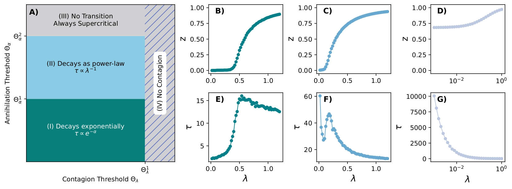

Kleber Andrade Oliveira, Pietro Traversa, Guilherme Ferraz de Arruda and Yamir Moreno
Published in: Nature Communications, Feb 2026

The rapid spread of information and rumors through social media platforms, especially in group settings, motivates the need for more sophisticated models of rumor propagation. Traditional pairwise models do not account for group interactions, a limitation that we address by proposing a higher-order rumor model based on hypergraphs. Our model incorporates a group-based annihilation mechanism, where a spreader becomes a stifler when the fraction of hyperedges aware of the rumor exceeds a threshold. The dynamics has two distinct subcritical behaviors: exponential and power-law decay, which can coexist depending on the heterogeneity of the hypergraph. Interestingly, in the set of parameters we analysed, we found continuous phase transitions in both homogeneous and heterogeneous hypergraphs. This finding aligns with the literature suggesting that real-world rumor propagation occurs near criticality. Finally, we validated our model using empirical data from Telegram and email cascades, which provides additional evidence and possible explanations for this criticality claim. These results open the door to a more detailed understanding of rumor dynamics in higher-order systems.